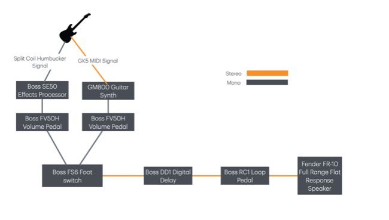

Gear and Setup
Overview
Pros and Cons
Cables and adaptors
Live gig nice to haves
Overview
Wouldn't it be nice if everybody put up detailed specs of their gear up for everybody else to check out? So often you have a how-do-I-get-that-sound moment when you are listening to people. Or maybe its an oh-I-really-don’t-want-that-sound moment. Either way, it would sure be handy. I use this page to shold the details of my current set up which I come back and forth to from time to time as it evolves changes.
Here is how everything currently fits together:

My big requirement is that I like to run two signals from the guitar. The first is the standard situation, and I use a split coil humbucker in the neck position. I have tried different pickups, haven’t seen too much difference once the quality is decent and the stock standard ones on my DLX58 Artist guitar (basically a 335 rip off, but lovely to play and well made), is great. The main thing here is to make sure your guitar is set up properly in terms of string distance from the pickups so the signal comes in nice and clear. I also run a GK5 pickup which has been mounted on the guitar, just behind the bridge pickup, as per the manufacturers guide. The1/4 inch stereo output for the GK5 is also mounted on the guitar, just near the guitar pickup output jack.
From there I am connecting a stereo 1/4 inch cable from the GK5 to the GM800, and a mono 1/4 inch cable to the Boss SE50 effects processor. Then it is 1/4 inch mono into a dedicated volume pedal for each signal which makes it easy to fade them in an out as needed.
From there, 1/4 inch mono leads from the GM800 and SE50 into the A and B inputs of FS6 foot switch which is set into latch mode on both pedals. This lets me turn the inputs on or off or off, or blend them.
After that it’s 1/4 stereo out into the Boss Digital Delay and Boss RC1 Loop Pedal, before it all lands in the Fender FR10.
Pros and Cons
The good aspects of this set up? Feel like I have a lot of control both incoming signals, to easily drop each signal volume or boost when needed. I thought about having a dedicated delay and loop for each signal, and put them in the chain before before the volume pedal, but seemed a bit over the top and I never really used it that way.
I don’t feel totally comfortable with a rack mount effects unit (the SE50) just because I would rather have everything in pedal format. Feel like you can kick pedals and take them on the road and all that, not sure if the rack mount fares as well (though it has lasted 30 years, maybe over thinking that!). But to cart it around you will need to think creatively about how to to set up your pedal board. I have been looking into the possibility of using a GT1000 Core instead of this, but I just find the sound of the SE50 so irreplaceable. Also wondering if I should do more specific amp modelling in conjunction with the SE50 in this stage of the chain, but what is coming out of the SE50 seems to work for me.
I am using the Boss DD1 probably more as placeholder for delay at the moment. Not totally in love with it, probably too spoilt from the some of the stuff I used to love in the Yamaha Magic Stomp. So that might get swapped out for something. It is ok for now.
And I am not totally happy with all this mono to stereo switching back and forth. Losing a little bit here with the GM800 especially, which is stereo from the guitar and and is completely modelled sound, so feel like I just want to head into a stereo PA from the GM800 (tried it through my Yamaha PA and it is just amazing). Still all of this is not to painful to live with and overall am pretty happy with how everyting joins up.
Note that GM800 with the GK5 does turn the guitar into a fully functional MIDI controller. Some of the onboard sounds are great, but just the idea I can play sounds I have created in Serum or Massive X or whatever is such a game changer for what I like to do with the guitar. That said, I am still not quite sure how I might bring that dimension into the set up as would need have a MacBook or something between the GM800 and the volume pedal which seems complicated.
Finally, after trying a million different amps, I now just push the signal into an FR10. Because the sound is pretty much completely modelled before it gets to the speaker, I didn’t want an amp to mess with it, but just recreate it as accurately as possible. The solution for this kind of thing is a Full Range Flat Response speaker and I love this approach. The sound desk folks also tend breath a sigh of relief with this approach. Also, the FR10 is 1000 watts so has a ton of head room.
Cables and Adaptors
5 x Mono 1/4 inch leads
4 x Stereo 14 inch leads
1 x Boss PSA240S 9 Volt Adaptor
1 x 12 Volt AC Adaptor for the SE50.
Note the SE50 has a bit of a non standard connection plug into the box. Easy to get, but you may need to do a dash or soldering (or ask a friend as I did).
Put some thought into cable length. And if you are running two leads from the guitar, probably an idea to get them around the same size and wrap them together in velcro or something.
Live gig nice to haves
One of the reasons I love this set up, is it is pretty plug and play. Everything bar the FR10 can just be carried around without too much fuss and going into the desk and foldback sounds pretty much he same as the FR10.